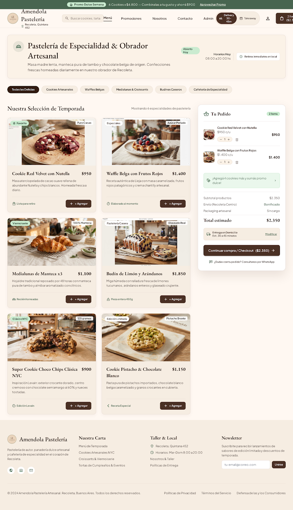
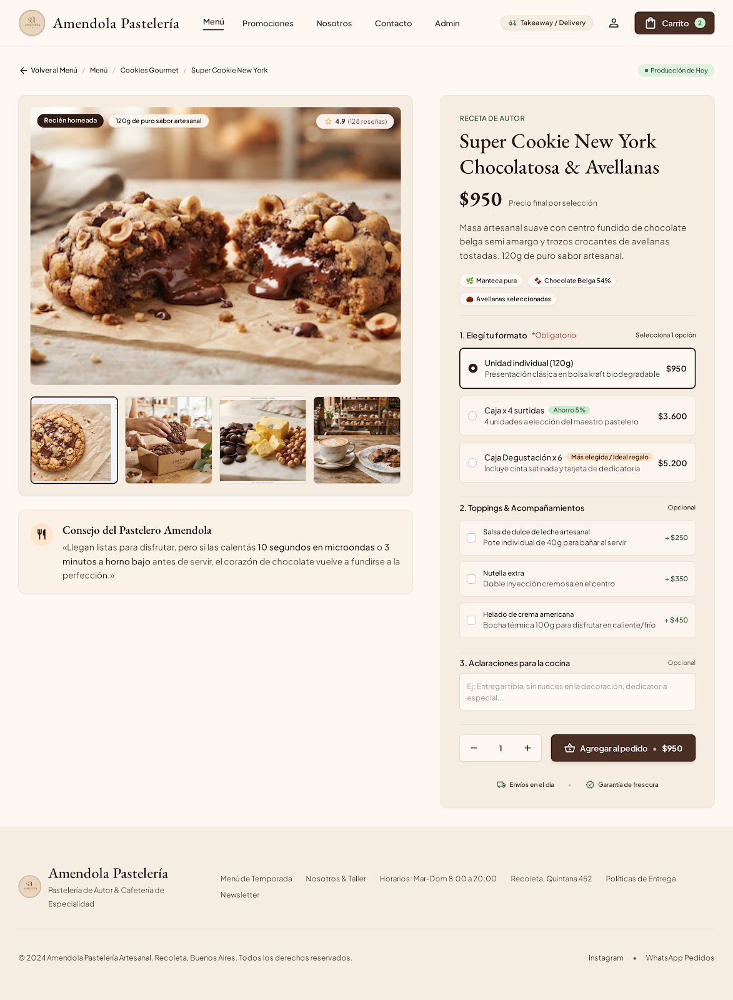
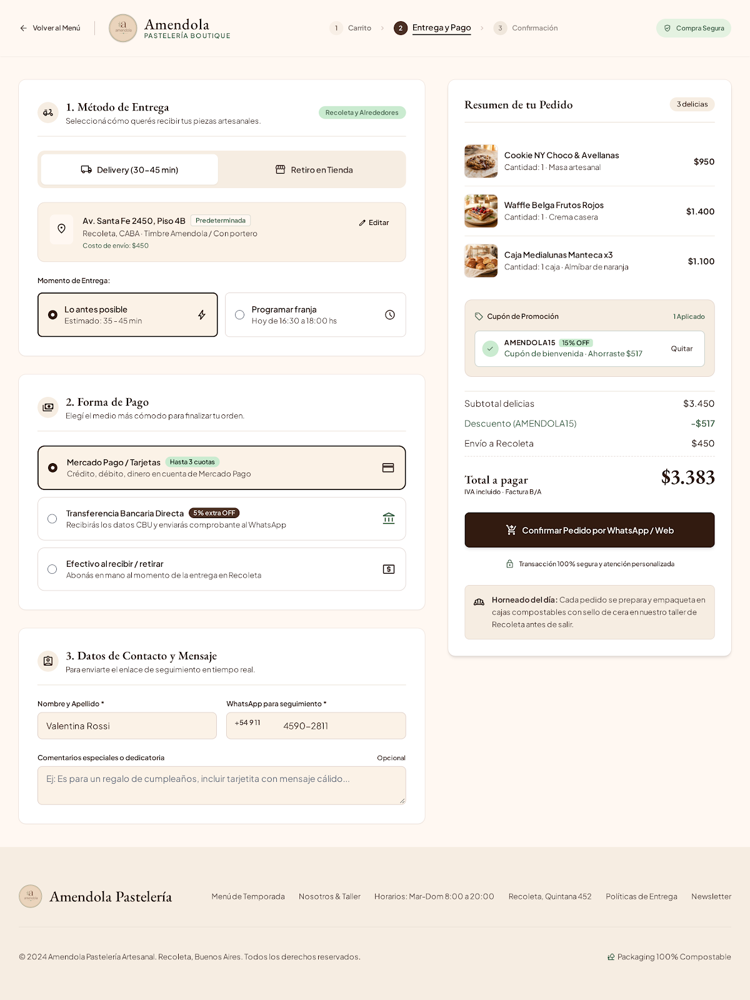
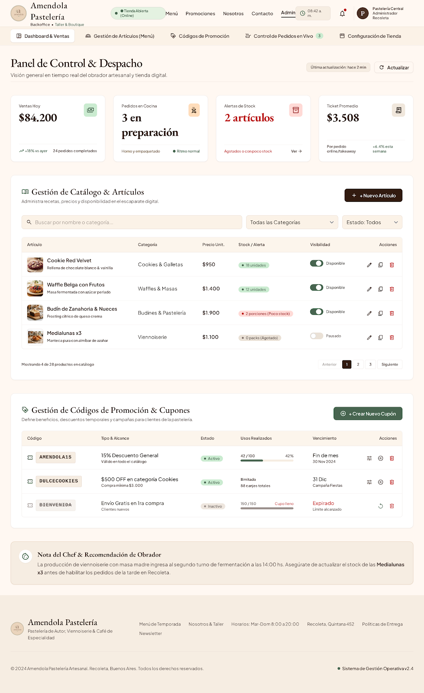

Desktop + Mobile
Catálogo & Obrador
Menú y Tienda Online
Landing de presentación, obrador en Recoleta, selector de modalidad Takeaway / Delivery, catálogo de especialidades y barra flotante de pedido.
Hub de prototipos interactivos navegables para demostración de diseño, estructura editorial y recorridos de usuario.

Desktop + MobileLanding de presentación, obrador en Recoleta, selector de modalidad Takeaway / Delivery, catálogo de especialidades y barra flotante de pedido.

Desktop + MobileSuper Cookie New York, selección obligatoria de formato, selector de toppings adicionales, notas para cocina y cálculo reactivo de total.

Desktop + MobileResumen de productos, aplicación de cupón promocional, franja horaria programada, métodos de pago y modal de confirmación asistida.

Desktop + MobileTablero de control para el equipo del taller, estado online de tienda, pedidos en preparación, métricas clave y despacho de comandas.